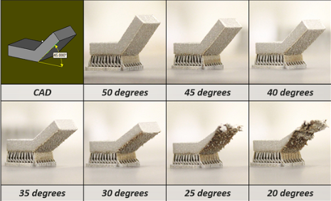

here you can see my progress of learning over the weeks
<----click here for laser cutting click here to see 2D raster and vector---->
1 June 2020:
Today we learn about using the 3d printer finally, I have used one of the schools 3d printers before, which is the makerbot 2. Now in the labs, there are new 3D printers and below listed are all the 3D printers in school.

There are 3 types of printers that uses 3 different ways to print out the product:
- FFF(fused filament fabrication): the printer heats up filament and deposited layer by layer.
- SLA(stereolithography): Uses light and shine onto the resin to harden the layers by a photochemical process.
- SLS(selective layer sintering): uses a laser as a power source to fuse/sinter powdered material to create a solid structure.
The type of printer we use in school are FFF, and for FFF there are two different types of 3D printers, there are cartesian type and delta type.

Parts of the 3D printer:
Below shows an image of a standard FFF 3D printer.

Somethings to take note for the 3d printers:
- The hot end of the 3D printer is around 180C, it is very hot and can cause burns when in contact with.
- for all the printers the school is using, the print bed is heated as to improve adhesion, the temperature is around 60C, you can burn your hand if you leave it there, and if you bump onto the print bed or if the bed is mis-aligned, the print will mess up and fail, so before printing, check the bed whether it is leveled and proper.
- the filament roll should be free from any obstruction and able to roll out easily, and the feed must be constant and not blocked from anything.
There are 2 ways to get a 3D print file, either it is created by you using software like fusion 360 or downloaded from other websites like thingiverse.
in CAD, once we got our model in our software, we need to find a common technique of representing the model. The two ways are STL and OBJ, since we are using fusion 360, we are using STL.
>how to save a file in fusion 360 to STL?
- Go to the object browser, select the object, right click it and choose save as STL, you can save the file in any folder you want.
- Another way is to go to tools, selet make and choose 3D print, once you got the 3D print menu, select the object, tick the preview mesh box, set refinement to medium, in the output, untick the send to 3D print utility.
For the 3D printer, there are some characteristics that can be tweaked to change the speed and quality for your prints
The common characteristics that can be changed are:
layer height
wall thickness
bridging and overhangs
supports
bed adhesion
object orientation
Layer height:
layer height is the height of each printed layer, the thinner the height, the finer the print will be and with thinner layers, it would take longer to print.
wall thickness:
wall thickness is when you control the number of strands required to build the walls of the object. If the layer height is 0.2 mm, then a wall thickness of 1mm will require 5 strands laid side-by-side, the minimum thickness for the walls should be 0.8 mm, and the wall thickness affects the time needed to print and the strength of it.

infill percentage:
infill percentage is about how much filling there is in the internal cavities, when there is more infill, the print would be stronger, but it would take longer to print. Typically the infill would be no more than 20% for our school.
platform adhesion:
Sometimes when you want to print something, the print would not have a stable base at the bottom for it to stand properly and it might fall over, ruining your print, or it might not stick well despite the heated print bed, for that we need to add a base to help it adhere well.
- Skirts are used to provide an outline, it does not have adhesion.
- Brims allow some adhesion to the print perimeter.
- Rafts are full platforms on which the 3D print is placed, the print would be on the raft instead of the bed.
object placement and orientation:
In the 3D printer software, you can change the orientation of the print to increase the chance of success, it can improve adhesion and reduce the number of supports needed. you can use the Rotate feature to change the orientation, and use the print on bed feature to ensure proper placement on the print bed.
29 May 2020:
We learn about some constraints of the 3D printer, in some prints, there are some constrains that needs to be taken note of so we can add supports onto it for the print to be successful.
Some constraints consists of bridging and overhang.
- bridging:
bridging means prints between 2 points that have no connection to each other. Normally, a 3D printer first prints the base layer, on which it builds up layer by layer. In contrast, there is no base layer between two points when bridging. Doing this would mean that it is printing on air. And there is a limit to how far it can go before it needs support. - overhang:
overhangs are prints that are suspended in air in an angle, since 3D printers cannot print in air, it is very tricky to deal with it, most printers can handle at least 45 degrees of overhang.
bridging overhang

22 May 2020:
We learn how to create a cube and learn how to form the pieces of it and create the layout of the pieces to be sent to the laser cutter to cut out.
Something we can do is to preset the parameters of the cube, this way, we just need to type in the name of the parameter when choosing the length and it will set it up, using parameters has its advantages, it can automatically change your design's dimensions just by changing the parameter's value, making it more convinient.
First we create a sketch and draw out the base of the cube, for the dimensions of the cube, all you need to do is to just type in the name for the sides and they will instantly fix it, we are going to do a 60x60x60 mm cube with a 3mm thickness.
Then we can create the other side of the cube, we will create sketch on that plane then repeat the same steps to draw the sketch.
we will now need to split the lower part of the side to form the tabs that will interlock with each other when we join the 2 pieces, we will split it to create 3 equal sized tabs by first drawing 3 rectangles at the bottom, then extrude the piece shape.
Secondly, using the combine function, we can combine the left and right tabs to the side of the cube and create the tabs, remember to TICK THE KEEP BODIES BOX, this way you can keep the parts and they wont be removed.

Now using construct tools, offset the plane to the centre of the cube so we can later mirror the side to the opposite.
Now using the mirror function, mirror the side of the cube and repeat the combine step for the mirrored side and the other side is done.

Now you can repeat the same steps for all sides until a full cube is formed.

Then we would need to create new sketches of each side of the cube so we can save their shapes as dxf files for the laser cutter.

Finally once all sides are saved as dxf files, you can use a vecter software like inkscape to lay them out and arrange them before saving all and use the file for laser cutting.
18 May 2020:
In class we learnt how to design a cup, vase without the use of offsetting plane and lofting, and creating a hollow cube with a sphere inside.
We start off by sketching the basic shape of the cup/vase, and using the "revolve" function under "solid"-->"create", by revolving around the z-plane, you can create an entire new body, and after that, just shell it and its done.


Next one is a hollow cube with a sphere in it, just like previously, we create a hollow cube and drilled out holes on the sides of the cube.

Then lastly, we draw a sphere with just a bit smaller diameter and move it into the inside of the cube, then just a bit of filleting on the corners and it is done!

15 May 2020:
Today our class learned about some functions to use in fusion 360, we learnt how to use functions to design things like a egg cup, a star and we design our own personalised keychain, the egg cup was the most interesting to me because I never used offset plane and loft before to create a shape like this, this could allow me to design something like a bottle or vase with ease.
By using the offset plane under the "costruct" function, you can shift the plane up and draw shapes on top of your other sketches and by using loft, you can combine all the sketches into a solid body.


And finally, using the "shell" function under the same place as "loft" you can hollow out the top to the size of an egg and that would give it a cavity to store the egg in.

Using the "shell" function, you can hollow out the inside of an object so you can use it for anything that you wish to use it for.
I used the shell function to hollow out this cube and I use "split body" function under "modify" to split this cube and to show the inside.

8 May 2020:
Today our class started on 3d printing design, although I have done 3d printing back in year 1, I never really did explore deeper into more of the app's functions and never really did more complex designs before, so I am looking forward to the following weeks learning about 3d printing.
Our first project is this keychain, which we made with the steps from our teacher.

First step: Go to "create" then "create sketch", select the bottom plane.
Second step: On "Sketch", go to "Create" and select "2 point rectangle", press on the pivot and you can stretch it out and type in any value for the size of rectangle you want.
Third step: On the left of the rectangle, draw a circle using the "centre diameter circle" in "create" and state the diameter you want for the ring.

Fourth step: Draw a smaller circle in the bigger circle to indicate the hole for the chain to go in.
Fifth step: Under "modify", search for the "fillet" option and using that function, by selecting 2 sides, you can curve the sharp corners and you can adjust how much you want to curve, do it for all 4 corners and you now have the basic sketch of the keychain.
Sixth step: In "solid", click for the "extrude" function and select onto the body and the outer part of the circle to extrude it, this will allow it to have a solid body.
Seventh step: Create a new sketch again on the top plane and use the "text" function under "create" and you can type in your name, you can then adjust it's size and bold and italicise your name.

Eighth step: Select your name and you can extrude it, but instead of creating a new body, you are going to cut out your name, do not go too far down or it will cut through the body.
Once all the steps are done, just check for any mistakes and its done!